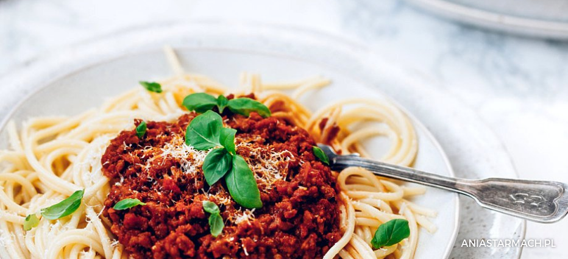

Spaghetti

This is the recipe my mother taught me when I was a teenager.
Ingredients
- 1 pound lean ground beef
- 12 ounces spaghetti
- 1 onion, chopped
- 1/3 cup vegetable oil
- 1/2 teaspoon salt
- 1/4 teaspoon ground turmeric
- 2 and 1/2 tablespoons tomato paste
- 2/3 cup water
Directions
-
Heat oil in a medium skillet. Add chopped onions,
and cook until tender. Add ground beef, and brown.
Stir in salt and turmeric. Dilute tomato paste in water,
and add to the beef mixture. Cook for 30 minutes over medium heat.
-
Cook spaghetti in a large kettle of boiling salted water
according to package directions. Drain well.
-
Combine beef mixture and noodles in a large kettle.
Cover, and cook over medium heat for 30 to 40 minutes.
Bon appétit